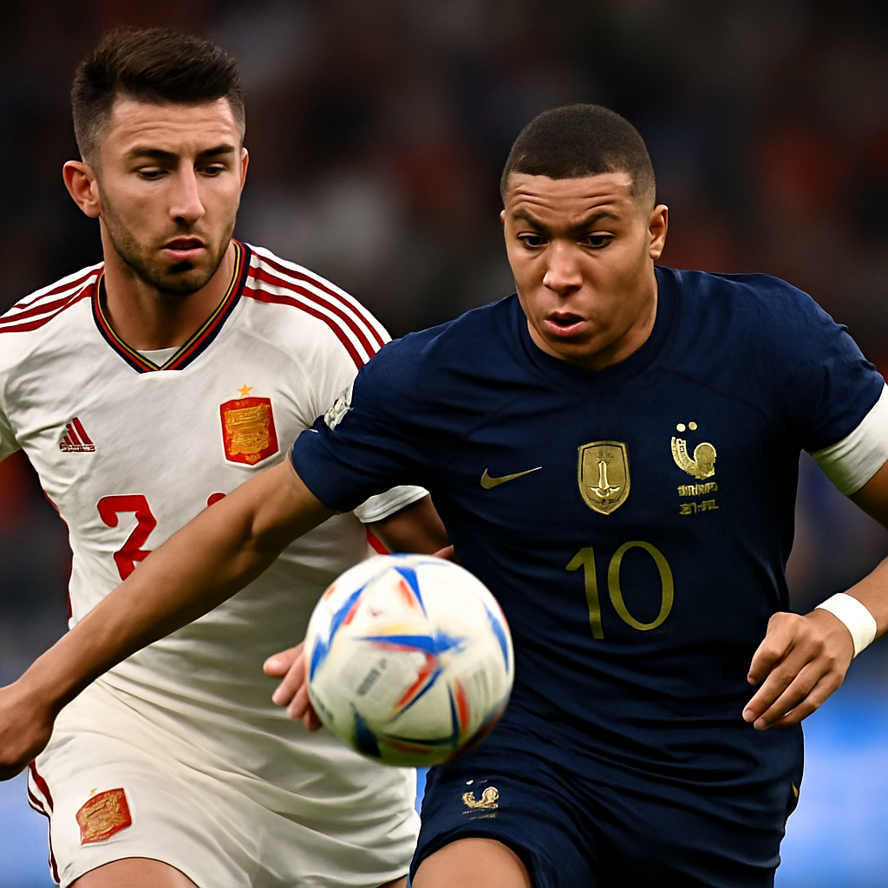
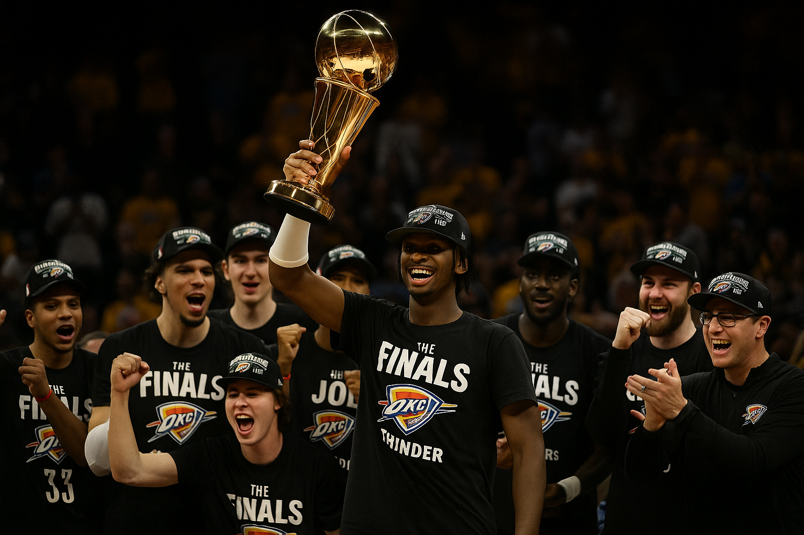

Dodgers Win 2025 World Series in One of the Greatest Fall Classics Ever Played
Posted: November 1, 2025 – 11:36 PM

They did it. The Los Angeles Dodgers are World Series champions once again, and if you watched this series from start to finish, you know it wasn't handed to them. This was a fight. This was a war. And when the final out was recorded just after 11 PM Pacific time, it felt like the culmination of something truly special.
The Blue Jays gave everything they had. They played with heart, with grit, with the kind of resilience that makes October baseball what it is. This wasn't a mismatch. This was a heavyweight bout that went the distance, and Toronto has nothing to hang their heads about. They pushed the Dodgers to the absolute limit.
But this night belonged to Yoshinobu Yamamoto. The World Series MVP was absolutely sensational throughout the series, and his performance will be talked about for generations. The man was lights out. Electric. Unhittable at times. He carried the Dodgers' pitching staff on his back and delivered when it mattered most.
And then there was *that* moment. The one that'll become legend. Yamamoto closing out the series on zero days rest. Zero. Not one. Not two. Zero. You don't see that anymore. You rarely see it ever. But there he was, walking to the mound in the biggest moment of his life, and he delivered. Ice in his veins. That's the kind of stuff that becomes folklore.
This was one of the greatest World Series we've ever seen. A true classic. The kind of series that reminds you why you fell in love with baseball in the first place. Every pitch mattered. Every at-bat felt huge. Every inning was a battle. Both teams left it all on the field, and we were lucky enough to witness it.
For the Dodgers, this is redemption. This is validation. This is what all the talent, all the payroll, all the pressure was building toward. They got it done when it counted. For the Blue Jays, this hurts, but they played their hearts out and earned the respect of everyone who watched. This was baseball at its absolute finest.
Congratulations to the 2025 World Series Champions, the Los Angeles Dodgers. And congratulations to all of us who got to watch a Fall Classic that will be remembered forever.
Club World Cup 2025 Set to Bring Global Stars to U.S. Soil
The 2025 FIFA Club World Cup is officially heading to the U.S. and bringing a 32-team format with it. Global powerhouses like Real Madrid, Manchester City, and PSG will be making the trip, alongside representatives from CONCACAF like Club América and the Seattle Sounders.
Set to take place across several U.S. cities next summer, the expanded format mirrors the traditional World Cup setup, complete with groups and knockouts. This marks a massive opportunity for sportsbooks, with early futures already available on sites like FanDuel, BetMGM, and Caesars.
Betting-wise, European clubs are expected to dominate the odds boards, but expect wild line movement once the travel schedules and summer form come into play. American clubs will have the crowd behind them, but likely open as big underdogs.
This is the first time U.S. bettors will be able to legally wager on a Club World Cup held on home soil. More updates and prop opportunities to follow as we get closer to kickoff.
Thunder Win Game 7 to Capture NBA Championship
The Oklahoma City Thunder have done it. After years of rebuilding, stockpiling draft picks, and developing their young core, they are finally NBA champions. In front of a roaring home crowd at Paycom Center, the Thunder defeated the Indiana Pacers 106 to 99 in Game 7 of the NBA Finals to clinch their first title since the franchise moved from Seattle.
Chet Holmgren was the star of the night. The second-year center put up 25 points, 10 rebounds, and 3 blocks, stepping up with the kind of confidence and presence usually reserved for seasoned veterans. He scored 9 points in the fourth quarter alone, including a clutch baseline jumper that stretched the lead to six with just under two minutes left. Shai Gilgeous-Alexander added 23 points, 7 assists, and made several key defensive plays down the stretch.
The Thunder came out of the gates blazing, building a 33 to 18 lead after the first quarter and riding that momentum for most of the night. While Indiana cut the deficit to as little as three in the third quarter, Oklahoma City's defense stiffened in the final 12 minutes. The Pacers shot just 3 of 15 from three-point range in the second half.
Tyrese Haliburton led the Pacers with 21 points and 8 assists, and Myles Turner chipped in 20 points and 9 rebounds. But it was not enough. The Thunder’s rebounding edge, 52 to 39, and their bench contribution, led by rookie Cason Wallace and veteran Isaiah Joe, proved decisive.
The celebration began as the final buzzer sounded. Fans erupted, players hugged and wept, and confetti poured down from the rafters. This is a moment Oklahoma City has waited for since Kevin Durant and Russell Westbrook brought them close over a decade ago. This time, they finished the job.
Historic Game 7: Pacers at Thunder NBA Finals Decider
The first NBA Finals Game 7 since 2016 is set for tonight at Paycom Center in Oklahoma City as the Pacers (3 3) visit the Thunder with history on the line. Indiana roared back in Game 6, winning 108 91 to force a winner take all finale.
Key storylines: the Pacers outscored OKC 68 32 over 24 minutes in Game 6 after a slow start. Obi Toppin led Indiana with 20 points, Andrew Nembhard added 17, Pascal Siakam grabbed a double double (16/13), and Tyrese Haliburton scored 14 despite a calf strain.
Oklahoma City’s star backcourt is in form: Shai Gilgeous Alexander has averaged 21 for Game 6, while Jalen Williams erupted for 40 in Game 5 and 31 in Game 6.
Tonight’s matchup leans home: teams with Game 7 at home in the Finals are 15 4 historically. But Indiana has been road tested all series and resilient.
Tip off: Sunday, June 22, at 8:30 PM ET on ABC/ESPN+. OKC enters as a 5 point favorite with an O/U near 222.5.
Game 7 rarely disappoints. Tonight, we’ll see if the Tide truly turns for Indiana or Oklahoma City claims redemption and its first ever NBA title on its home court.
Game 7 Showdown: Pacers Level Finals 3 3 After Dominant Game 6 Home Win
For the first time in nearly a decade, the NBA Finals will come down to a Game 7. Indiana, facing elimination, erupted in front of a sold out Gainbridge Fieldhouse and hammered the Thunder 116 88 to even the series 3 3. It marks the first Game 7 in the NBA Finals since 2016 and the entire state is buzzing with anticipation.
Indiana flipped the script early. Despite falling behind 12 2, they rattled off a massive 30 9 run in the second quarter, turning a slow start into an 18 point halftime lead. The Pacers dominated the third quarter too, outscoring the Thunder 68 32 across a devastating 24 minute span.
Stat sheet highlights: Indiana forced 21 Thunder turnovers, converted those into 19 points, shot 51% from the field, and outscored OKC 49 18 off the bench. They racked up 23 fast break points and controlled the paint a perfect storm of aggressive, unrelenting team basketball.
The bench was electric. Obi Toppin started with 20 points, Andrew Nembhard added 17, Pascal Siakam posted 16 points and an impressive 13 rebounds, and TJ McConnell flirted with a double double (12 points, 9 boards, 6 assists). Not bad for a team fighting to stay alive in mid June.
Tyrese Haliburton, playing through a calf injury, was a spark plug in 23 minutes: 14 points, 5 assists, and 2 steals. His mid game energy and clutch plays helped shift the tempo in Indiana’s favor.
Meanwhile, Oklahoma City looked out of sorts. Shai Gilgeous Alexander scored 21 but turned it over 8 times his worst playoff performance while Jalen Williams had just 16. The Thunder shot a dismal 38.9% overall and struggled from beyond the arc at 26.7%. Their title hopes were flattened on the road.
Now, all eyes turn to Sunday. Game 7 tips off at 5:30 PM PT on ABC. Oklahoma City is favored by roughly 2.5 7.5 points and has been nearly unstoppable at home (10 2 in these playoffs), but Indiana carries tremendous momentum and a belief that they can do what Cleveland did in 2016.
The historical stakes are thrilling. This is just the 20th Finals Game 7 in NBA history, and the first since the Cavaliers Warriors epic back in 2016. The home team has gone 15 4 in those deciding games a stat that favors the Thunder but Indiana has shown grit in abundance, pulling off four different comebacks of 15+ points this postseason.
These aren’t just two teams chasing a ring, they’re chasing first ever titles in a dramatic, unpredictable, young franchise Finals. Indiana’s depth versus OKC’s star power, crowd energy versus tactical discipline it’s the perfect storm for a legendary Game 7. If you love basketball, this is must watch.
NBA Finals Game 6: Thunder Look to Close Out Series vs Pacers
The Oklahoma City Thunder are one win away from completing one of the most impressive rebuild to title arcs in modern NBA history. Leading the 2025 NBA Finals 3 2 over the Indiana Pacers, the Thunder will attempt to close out the series tonight in front of their home crowd at Paycom Center. A win would deliver the franchise its first NBA championship since the Seattle SuperSonics' 1979 title and the first for OKC since relocating.
Game 5 in Indiana saw the Thunder gut out a 106 101 road win, fueled by a vintage performance from Shai Gilgeous Alexander, who finished with 31 points, 6 rebounds, and 7 assists. SGA has been the most consistent player in the series, averaging 28.2 points per game while shooting 51% from the field and providing elite level defense at the guard spot. His late game composure has anchored OKC throughout the playoffs and helped the team regain momentum after a blowout loss in Game 4.
Chet Holmgren has quietly been the defensive anchor for Oklahoma City, averaging 3.2 blocks per game in the Finals and altering countless shots in the paint. His ability to stretch the floor has also opened up driving lanes for Jalen Williams, who continues to be a two way x factor. Williams has been a matchup nightmare for Indiana’s wings, averaging 17.5 points per game on 48% shooting and knocking down key perimeter shots when defenses collapse on SGA.
Meanwhile, the Pacers find themselves in a familiar underdog role. Despite dropping Game 5 at home, Indiana has shown resilience all postseason. Tyrese Haliburton remains the engine of the Pacers offense, averaging 21.7 points and 9.4 assists in the Finals, though he’s struggled with turnovers and inconsistent shooting over the last two games. Indiana’s supporting cast including Pascal Siakam, Myles Turner, and Andrew Nembhard will need to deliver if they hope to force a decisive Game 7 back in Indiana.
One of the key issues for the Pacers has been their inability to defend the three point line. The Thunder are shooting 38.1% from beyond the arc this series, and Oklahoma City has exploited Indiana’s switching scheme with precision ball movement. Head coach Mark Daigneault has made subtle but effective adjustments throughout the Finals, particularly in how OKC defends the pick and roll and attacks mismatches on the perimeter.
Tip off is scheduled for 6:00 PM Pacific / 9:00 PM Eastern, with live coverage on ABC and ESPN+. The Thunder are currently listed as 5.5 point favorites with an over/under of 215.5. Bettors have leaned toward OKC early, with 61% of public tickets backing the home side to clinch. This could mark the official beginning of a new NBA era one led by a homegrown Thunder core that was once doubted, now standing on the verge of a title.
If Oklahoma City gets it done tonight, it won’t just be a championship it’ll be a statement. The youngest team in the league, built through years of patience and draft capital, now finds itself 48 minutes from the ultimate reward. With the crowd behind them and momentum swinging their way, the Thunder will look to finish the job and etch their names into NBA history.
Game 5 Preview Thunder vs Pacers (NBA Finals)
The 2025 NBA Finals shifts back to Oklahoma City for Game 5 with the series tied 2 2, and the stakes couldn’t be higher. The Thunder pulled off a huge comeback in Game 4, winning 111 104 in Indiana after trailing by 7 heading into the fourth quarter. Now back at home, OKC looks to ride that momentum in front of one of the loudest postseason crowds in the league.
Historically, the Game 5 winner in a 2 2 NBA Finals goes on to win the series over 74% of the time. That bodes well for the Thunder, who are 44 8 at Paycom Center this season (including playoffs). Shai Gilgeous Alexander has taken over the series, averaging 32.7 points per game and erupting for 15 points in just five minutes during the Game 4 turnaround.
Indiana enters this one short handed again, with Jarace Walker (ankle) and Isaiah Jackson (Achilles) ruled out. Tyrese Haliburton continues to lead the offense, but the Pacers' bench has struggled to keep up, especially late in games. In Game 4, they committed 18 turnovers and allowed 50 points in the paint a clear sign that OKC’s physicality is starting to take over.
Chet Holmgren briefly exited Game 4 after rolling his ankle but is expected to play in Game 5. His rim protection and floor spacing have been critical, especially when OKC switches defensively and forces Indiana into late clock situations. The Thunder also hold major edges in rebounding, free throw margin, and bench scoring through the first four games of the series.
As of now, the Thunder are 9.5 point favorites with a moneyline around 425 and the total sitting near 224. OKC is 8 3 against the spread at home in these playoffs, though they’ve been hit or miss covering double digit numbers. There could be value in props or adjusted totals depending on how closely this one is expected to stay.
Bottom line the Thunder have the momentum, the matchup advantages, and the home crowd. Indiana would need a near perfect performance to steal this game. Based on the numbers and the way Game 4 unfolded, this one tilts strongly in favor of Oklahoma City grabbing a 3 2 series lead tonight.
Red Sox Trade Rafael Devers to Giants in Shocking Blockbuster That May Shift the NL Power Balance
In a stunning midseason blockbuster, the Boston Red Sox have traded star third baseman Rafael Devers to the San Francisco Giants. Heading back to Boston in the deal are 23 year old left handed starter Kyle Harrison, veteran reliever Jordan Hicks, and two additional prospects. It’s a franchise shaking move for both clubs one that sacrifices emotional attachment for bold, strategic realignment.
Devers has been the face of the Red Sox for much of the last decade, racking up All Star appearances, massive home runs, and unforgettable playoff moments. But internal friction over role changes and Boston’s reluctance to lock him in long term had reportedly soured the relationship. The Giants, sitting firmly in the playoff hunt, were willing to pay a steep price for a left handed bat that changes the shape of any lineup.
The cost was Kyle Harrison and for San Francisco fans, that part hurts. Harrison isn’t just any young pitcher. The 23 year old was widely viewed as the future ace of the franchise. Drafted and developed by the Giants, he carried the hopes of a rotation rebuild on his shoulders. His strikeout rates, poise, and connection to the Bay Area made him a fan favorite. Trading him stings, and it will for a long time, no matter how productive Devers becomes.
From Boston’s side, this is a clear retooling move not a surrender. Harrison slots in immediately as a rotation cornerstone alongside Brayan Bello and Kutter Crawford. Jordan Hicks brings 100 mph heat to a bullpen that desperately needed swing and miss stuff late in games. And the two prospects included believed to be an MLB ready infielder and a high K Double A righty offer flexibility for the future or potential trade chips at the deadline.
This trade also plays into the changing shape of MLB. With more interleague games and looming divisional realignment on the table for 2026, the idea of “American League contender” versus “National League contender” is increasingly blurred. Boston’s new look roster built around pitching depth and defensive balance may actually compete more effectively in the broader postseason landscape than their previous offense heavy identity.
The Giants, meanwhile, are making their intentions clear: it’s time to win now. Devers is expected to slot into the heart of the lineup and provide immediate thunder alongside Conforto, Estrada, and Bailey. With the Dodgers showing cracks and the NL wild card race wide open, this is San Francisco’s big swing. But for fans, it’s bittersweet. Letting go of Kyle Harrison feels like saying goodbye to the future in favor of the present.
This is the kind of trade that rarely happens in today’s risk averse landscape two clubs exchanging real value in a way that could alter the playoff picture immediately. The Red Sox get younger, deeper, and more defensively balanced. The Giants get a bat that could carry them through October. And MLB gets one of the most fascinating deals in recent memory, with fanbases on both coasts trying to make sense of what they just gained and lost.
2025 NBA Finals Deadlocked 2‑2 as Thunder Dig Deep in Game 4
The 2025 NBA Finals are tied at 2‑2 after the Oklahoma City Thunder overcame a 10‑point deficit to defeat the Indiana Pacers 111‑104 in Game 4. Shai Gilgeous‑Alexander exploded for 35 points 15 of them in the final 4:38 and led OKC on a decisive 12‑1 run to level the series.
Jalen Williams chipped in 27 points and Alex Caruso added 20 off the bench, while Chet Holmgren grabbed 15 rebounds. The Thunder shot 53% overall and outscored Indiana 30‑21 in the fourth quarter despite going cold from deep.
Indiana’s Tyrese Haliburton (18 pts, 8 asts), Pascal Siakam (20 pts), and Obi Toppin (17 pts) failed to regain momentum. The Pacers went just 5‑for‑18 in the fourth and 0‑for‑8 from three point range during crunch time.
Through four games, Gilgeous‑Alexander is averaging a Finals‑leading 35 PPG. OKC holds a slight edge in field goal percentage, while Indiana has shown impressive turnover defense and three point shooting though both faltered late in Game 4.
Game 5 shifts toPaycom Center in Oklahoma CityonMonday, June 16 at 8:30 PM ET. Historically, 73.3% of teams that win Game 5 in a 2‑2 Finals go on to win the title a pivotal moment with home court advantage on the line.
Oilers Stun Panthers in Overtime, Tie Stanley Cup Final 2 2
Just when it looked like the Panthers were about to take a stranglehold on the series, the Edmonton Oilers flipped the script in dramatic fashion. Down 3 0 after the first period, Edmonton clawed all the way back and eventually sealed a 5 4 overtime win to tie the Stanley Cup Final at two games apiece.
Florida came out flying in front of their home crowd. Sam Bennett scored twice in the opening frame, and Brad Marchand added a power play tally to give the Panthers a three goal cushion. But that momentum wouldn’t last long.
The Oilers responded in the second period with three unanswered goals. Ryan Nugent Hopkins got things going, Darnell Nurse followed up, and rookie Vasily Podkolzin buried the equalizer. By the time the third period began, it was a brand new hockey game.
Jake Walman gave Edmonton its first lead midway through the third, only for Sam Reinhart to tie it with 19.5 seconds left a heartbreaking blow for Oilers fans who thought they were seconds away from victory. But in overtime, Leon Draisaitl did what superstars do. His wrister from the left circle beat Sergei Bobrovsky clean and silenced the Florida crowd, capping one of the wildest comebacks in recent Stanley Cup Final memory.
Backup goalie Calvin Pickard played a key role in the win, stopping 22 of 23 shots in relief after Stuart Skinner was pulled early. His calm presence gave Edmonton the stability they needed to mount the comeback.
Game 5 shifts back to Edmonton on Saturday with the series now tied 2 2. Both teams have proven they can take a punch and respond. This Final is officially up for grabs.
Pacers Seize 2 1 NBA Finals Lead After Game 3 Win Over Thunder
The Pacers just flipped the script on the NBA Finals. With a 116 107 win over the Thunder in Game 3, Indiana now holds a 2 1 lead and all the momentum heading into Friday’s Game 4. It was a team effort, but make no mistake Bennedict Mathurin stole the show off the bench with 27 points on just 12 shots. The kid was lights out.
Tyrese Haliburton once again showed why he’s the engine of this team, finishing with 23 points, 11 assists, and 6 boards. He made all the right reads down the stretch, especially during a crucial 14 6 run late in the fourth that broke a 98 all tie and put Indiana in control for good. T.J. McConnell brought his usual chaos off the bench too 10 points, 5 assists, 5 steals. The Thunder couldn’t handle his energy.
Indiana’s bench was the difference outscoring OKC’s 49 to 18. Pascal Siakam added 21 smooth points, and Myles Turner did his thing inside with 15 and 8. The Thunder got 24 from Shai Gilgeous Alexander and 26 from Jalen Williams, but SGA turned it over six times and the team struggled with execution late.
Game 4 is back in Indy on Friday night, and the Pacers have a golden opportunity to take full control of this series. For a team that’s been counted out all postseason, they’re two wins away from making history. This Finals just got real.
ESPN Launches ESPN Bet Sportsbook App with Penn Entertainment
ESPN has officially launched its sportsbook platform, ESPN Bet, in a landmark partnership with Penn Entertainment. The app is expected to go live later this year across multiple U.S. states, marking ESPN's first major entry into the online sports betting industry.
The long term licensing deal, reportedly worth more than 1.5 billion dollars over ten years, will allow Penn to operate the sportsbook while using ESPN’s branding, media reach, and digital integration. ESPN Bet will be available in states where online sports betting is already legalized and regulated.
The ESPN Bet app will feature traditional sports wagering options, including live betting, parlays, and player props, along with real time integrations tied to ESPN broadcasts. The app will also promote exclusive offers and tie ins with popular ESPN personalities and studio shows, aiming to blur the line between media and sports wagering in a way no previous platform has done.
ESPN President Jimmy Pitaro emphasized the company’s focus on user safety, confirming that the platform will include responsible gaming tools such as deposit limits, timeout features, and educational content. The rollout will also prioritize transparency and compliance with state level regulations.
The move comes as the U.S. sports betting market continues to expand rapidly, with projections estimating over 15 billion dollars in annual revenue by 2028. With ESPN’s reach across digital, mobile, and television, the new sportsbook could dramatically shift user behavior and competition in the space.
Early market reaction has been strong, with analysts calling ESPN Bet a potential game changer in how fans consume and engage with live sports. Competitors like DraftKings and FanDuel may face immediate pressure to adjust as ESPN’s massive audience is funneled toward its new betting interface.
As the lines between sports content and betting continue to fade, ESPN Bet represents the next evolution in media sportsbook partnerships. All eyes will be on its launch and how quickly it captures market share in an already crowded space.
Twins Rip A’s Temporary Ballpark After Costly Injuries to López and Correa
The Minnesota Twins are heading back home but not quietly.
After losing two key players in the span of two days, Minnesota is putting Major League Baseball on blast over the playing conditions at Sutter Health Park, the Oakland Athletics’ temporary home in West Sacramento. And honestly? You can’t blame them.
It started with Pablo López, who left his start early after clearly feeling something in his throwing arm. That “something” turned out to be a Grade 2 teres major strain a shoulder injury that’s likely to keep him out for at least 6 to 8 weeks. But the injury might not have been about mechanics or overuse. Several teammates including Joe Ryan say the mound itself could be to blame.
“It’s not right,” Ryan said. “It’s hard packed, there’s no give. You’re basically throwing off concrete.” He wasn’t the only one frustrated other pitchers have commented on how different that mound feels compared to the standard big league setup. And when you’re talking about a guy’s shoulder, a few inches or degrees of slope can change everything.
Then came Carlos Correa. He sat out the final two games of the series after tweaking his back and said point blank it happened in the batter’s box. “It was the slipperiest box I’ve ever stepped in,” Correa told reporters. “It felt unsafe. I’m not taking any chances with my season.”
These aren’t minor aches and pains. We’re talking about a frontline starter and a franchise shortstop both sidelined after playing on a Triple A field that was never meant to host MLB games full time.
The A’s are using Sutter Health Park while they wait out their move to Las Vegas, and while the atmosphere might feel nostalgic for minor league baseball, it’s clearly not up to par when it comes to keeping elite players safe. There are growing calls from players and insiders for MLB to take action whether that means upgrading the field, redoing the mound entirely, or even pulling games from the venue.
From a betting angle, the ripple effects were immediate. The Twins’ division odds lengthened overnight. Their projected win total dipped slightly. Oddsmakers have to factor in the absence of López, especially for a team already thin on pitching depth.
But beyond the numbers, this is about trust. Players are expected to put their bodies on the line every day and they do. The least the league can do is make sure the field they’re playing on isn’t working against them.
Joe Ryan said it best: “We’re in the big leagues. We’re supposed to have the best conditions in the world.” Right now, the Twins and probably a lot of other teams would tell you Sutter Health Park isn’t even close.
And with the A’s planning to use that park until 2027? You better believe this conversation is just getting started.
Aaron Rodgers Signs with Steelers $13.5M Deal Signals New Era in Pittsburgh
In a surprise move that instantly shakes up the NFL landscape, Aaron Rodgers has officially signed a one year deal with the Pittsburgh Steelers. The four time NFL MVP and future Hall of Famer agreed to terms reportedly worth $13.5 million, making this one of the most talked about signings of the 2025 NFL offseason.
Rodgers, now 41, was widely expected to either return to the New York Jets for one final season or announce his retirement following a devastating Achilles tear on just his fourth snap of the 2023 season. Instead, he’s heading to the AFC North to join one of the league’s most storied franchises a team that now looks primed to contend once again.
The Steelers’ 2024 campaign was riddled with inconsistency at the quarterback position. Kenny Pickett failed to take a meaningful step forward, and backups like Mitchell Trubisky and Mason Rudolph didn’t offer long term answers. Bringing in Rodgers even at this stage in his career is a clear indication that Pittsburgh is done waiting around. They're in win now mode.
Rodgers’ $13.5 million contract is loaded with performance bonuses, making it a low risk, high reward gamble for Mike Tomlin’s squad. The team believes his experience, leadership, and arm talent can elevate a young offense anchored by Najee Harris, George Pickens, and Pat Freiermuth. With one of the NFL’s better defenses already in place, the Rodgers signing positions Pittsburgh as a legitimate dark horse in the 2025 Super Bowl race.
For fans in Steel City, this is a moment of cautious optimism. Rodgers brings both star power and baggage he's coming off a major injury, and it's unclear how much mobility or durability he'll retain. But if he’s anywhere near his MVP form from just a few seasons ago, the Steelers may have pulled off one of the smartest veteran signings in recent memory.
From an NFL betting perspective, Rodgers' arrival is already causing ripple effects in the futures markets. Early odds for the Steelers to win the AFC have shortened, and Pittsburgh’s over/under win total is expected to move once sportsbooks adjust for this news.
Regardless of how the season plays out, one thing is certain: the 2025 Pittsburgh Steelers are going to be must watch television. Aaron Rodgers in black and gold it’s not what anyone expected, but it’s the headline move that could define this entire season.
The Game Just Changed: Thailand Goes All In on $100 Billion Casino Vision
Posted: 1:54 AM June 7, 2025
The game just changed in Asia and Thailand pushed all its chips to the center.
In a bold and potentially transformational move, Thailand has unveiled an ambitious plan to develop a $100 billion baht ($3 billion USD) casino entertainment complex aimed squarely at revitalizing tourism and competing with regional heavyweights like Macau and Singapore.
The proposal, which recently received Cabinet approval, envisions massive integrated resorts combining luxury hotels, convention centers, theme parks, and legal casinos. Only 10% of the footprint would involve gambling, while the rest focuses on upscale, family friendly attractions.
Deputy Finance Minister Julapun Amornvivat says the initiative could add up to 2% to GDP annually and bring millions of new visitors to key tourism hubs like Bangkok, Phuket, and Pattaya. Major casino operators such as Las Vegas Sands and MGM are already expressing interest.
To minimize social harm, the government has proposed strict rules for Thai citizens including a 5,000 baht entry fee and proof of over 50 million baht in bank assets. Officials insist these measures are non negotiable.
Still, public opinion is sharply divided. A recent poll shows that 59% of Thai citizens oppose the idea, even with the economic upside. Critics fear an increase in addiction, debt, and crime.
The proposed legislation heads to Parliament in July. If it passes, Thailand could soon join the ranks of Asia’s top gaming destinations not as a follower, but as a global leader.
Asia’s casino map may never look the same. And Thailand? They just played their hand and it was a monster.
NBA Finals Preview: Thunder vs. Pacers
The 2025 NBA Finals are officially set and this one wasn’t on anyone’s preseason bingo card. The Oklahoma City Thunder will take on the Indiana Pacers in what should be a fast paced, unpredictable, and surprisingly high level championship series.
Most sportsbooks have opened the Thunder as clear favorites, sitting around 700 to win the series. Indiana, meanwhile, enters as a significant underdog near +500 despite knocking out Boston in six games and riding one of the hottest stretches in franchise history.
Oklahoma City has been dominant throughout the playoffs, led by MVP finalist Shai Gilgeous Alexander. He’s averaging over 28 points per game with elite efficiency on both ends. Chet Holmgren has also been a massive X factor, using his length to alter shots and stretch the floor offensively. Add in one of the league’s deepest benches and a top three postseason net rating, and you’ve got a team that’s firing on all cylinders.
But don’t sleep on Indiana. Tyrese Haliburton has completely flipped the script on the “can’t carry a team” narrative. He’s orchestrated an offense that leads the playoffs in assists per game and ranks top two in offensive rating. Pascal Siakam has brought experience and scoring versatility, and Myles Turner continues to anchor the defense while spacing the floor.
The key matchup will likely come down to tempo and transition. Both teams like to run, but OKC thrives in the chaos. If the Thunder can force turnovers and turn defense into quick points, Indiana might not be able to keep up. But if the Pacers control pace, hit from outside, and stay healthy, they have enough firepower to make this interesting.
Game 1 tips off Thursday night in Oklahoma City. The Thunder have home court, the oddsmakers, and momentum on their side. But in a postseason that’s been anything but predictable, nothing is off the table.
Stanley Cup Final Game 1: Stars Crush Oilers 6-3
Posted: 2:01 PM June 4, 2025
DALLAS, TX The 2025 Stanley Cup Final is officially underway, and the Dallas Stars came out blazing in Game 1, defeating the Edmonton Oilers 6 3 at American Airlines Center. Dallas now leads the best of seven series 1 0 and sent a clear message: this team has no intention of letting Edmonton's star power run the show.
After a tense first period that ended tied 2 2, the Stars exploded in the second frame with three unanswered goals. Veteran winger Joe Pavelski lit the lamp on a power play midway through the period, followed by goals from Miro Heiskanen and Jason Robertson. The Stars’ puck movement, forecheck pressure, and playoff composure overwhelmed Edmonton for long stretches of the game.
Edmonton’s Connor McDavid had a goal and assist but couldn’t carry the load alone. The Oilers struggled defensively, especially in transition, and gave up far too many high danger chances in the slot. Goaltender Stuart Skinner faced 37 shots, while Jake Oettinger turned in a strong 31 save performance for Dallas.
This marks Dallas’s first appearance in the Stanley Cup Final since 2020, and they’re clearly drawing from experience. Meanwhile, Edmonton chasing its first championship since 1990 must regroup quickly. Game 2 is scheduled for Saturday night in Dallas, and the Oilers will need cleaner zone entries, better defensive spacing, and more from their secondary scorers to even the series.
🧊 Final: Dallas Stars 6, Edmonton Oilers 3Series: DAL leads 1 0
Shohei Ohtani’s Historic MVP Run
Posted: 1:39 PM June 3, 2025
Shohei Ohtani is doing it again.
With the season barely halfway through, Ohtani has surged to the top of the NL MVP race and is positioning himself for what could be his third career MVP award and his first since joining the National League.
As of June 3, Ohtani leads the Dodgers in OPS (.994), home runs (18), and RBIs (49). His walk rate is up, strikeouts are down, and even without pitching due to elbow recovery, his offensive output alone has vaulted him into MVP contention.
Oddsmakers now have him as the betting favorite at +180, ahead of teammates Mookie Betts and Freddie Freeman, and Phillies slugger Bryce Harper. If he holds his pace, Ohtani would be the first player to win MVP in both leagues as a pure hitter.
What makes this season unique is that it’s the first time Ohtani has played exclusively as a designated hitter, yet he's still ranked among the top five in WAR for all position players in baseball.
Beyond the numbers, his presence has been a spark for Los Angeles. The Dodgers are 38 21 heading into June, tied with the Phillies for the best record in the National League. Ticket sales, ratings, and overall fan energy have soared.
If the season ended today, there would be little debate, Ohtani is on track for yet another MVP trophy. The only question is how high the ceiling goes from here.
The 2025 NBA Finals are officially set and this one wasn’t on anyone’s preseason bingo card. The Oklahoma City Thunder will take on the Indiana Pacers in what should be a fast paced, unpredictable, and surprisingly high level championship series.
Most sportsbooks have opened the Thunder as clear favorites, sitting around 700 to win the series. Indiana, meanwhile, enters as a significant underdog near +500 despite knocking out Boston in six games and riding one of the hottest stretches in franchise history.
Oklahoma City has been dominant throughout the playoffs, led by MVP finalist Shai Gilgeous Alexander. He’s averaging over 28 points per game with elite efficiency on both ends. Chet Holmgren has also been a massive X factor, using his length to alter shots and stretch the floor offensively. Add in one of the league’s deepest benches and a top three postseason net rating, and you’ve got a team that’s firing on all cylinders.
But don’t sleep on Indiana. Tyrese Haliburton has completely flipped the script on the “can’t carry a team” narrative. He’s orchestrated an offense that leads the playoffs in assists per game and ranks top two in offensive rating. Pascal Siakam has brought experience and scoring versatility, and Myles Turner continues to anchor the defense while spacing the floor.
The key matchup will likely come down to tempo and transition. Both teams like to run, but OKC thrives in the chaos. If the Thunder can force turnovers and turn defense into quick points, Indiana might not be able to keep up. But if the Pacers control pace, hit from outside, and stay healthy, they have enough firepower to make this interesting.
Game 1 tips off Thursday night in Oklahoma City. The Thunder have home court, the oddsmakers, and momentum on their side. But in a postseason that’s been anything but predictable, nothing is off the table.
Paris Saint Germain finally captured the one trophy that had long eluded them and they did it in emphatic fashion. On Saturday night, PSG routed Inter Milan 5 0 in the 2025 UEFA Champions League Final at the Allianz Arena in Munich, lifting their first European Cup in club history.
The scoring started early when Achraf Hakimi found the net in the 12th minute. But it was 18 year old Désiré Doué who stole the show, scoring twice and assisting another. Doué’s pace, precision, and composure made him the clear Man of the Match and a breakout star on the world stage.
Khvicha Kvaratskhelia added a third before halftime, and late goals from Bradley Barcola and 17 year old Senny Mayulu sealed the record setting margin. It was the largest win in a Champions League final since the competition's rebrand in 1992.
Manager Luis Enrique guided the French giants to a historic treble this season: Ligue 1, Coupe de France, and now the Champions League. PSG becomes just the second French club ever to win Europe’s top prize, joining Marseille (1993).
Celebrations erupted across Paris, with massive crowds lining the Champs Élysées. Unfortunately, the night turned chaotic in parts of the city with multiple arrests and at least two reported fatalities tied to post match violence.
Still, the football speaks for itself: PSG didn’t just win they dominated. The message to the rest of Europe is loud and clear: the Parisians are no longer chasing greatness. They’ve arrived.
Brett Favre is one of the most recognizable names in NFL history. A Hall of Fame quarterback, ironman of the league, and face of the Green Bay Packers for nearly two decades, Favre's legacy seemed carved in stone. But over the past few years, his name has been tied to something far more controversial a Mississippi welfare scandal that stunned the sports and political world alike.
The controversy stems from a sprawling investigation into the misuse of Mississippi's welfare funds. According to state and federal audits, tens of millions of dollars intended for the state's poorest residents were misspent, misallocated, or outright stolen. One of the most eye catching details? Roughly $5 million of that money allegedly went to build a volleyball stadium at the University of Southern Mississippi a project Favre backed heavily and where his daughter played collegiate volleyball.
While Favre has denied knowingly receiving or redirecting welfare funds, text messages uncovered during the investigation show him in conversations with state officials, asking whether the media would find out about the source of the funding. “If you were to pay me, is there any way the media can find out where it came from and how much?” he allegedly asked in one exchange. That single line became a flashpoint in the public debate around his involvement.
To be clear, Brett Favre has not been criminally charged as of June 2025. But the court of public opinion has been less forgiving. Lawsuits have been filed by the state to recover funds. Civil litigation is ongoing. And public trust has taken a hit not just in Favre, but in the state institutions and nonprofit executives who enabled the scheme.
Favre, for his part, has pushed back with lawsuits of his own, including a defamation case against sports commentator Shannon Sharpe and journalist Pat McAfee. Those cases stirred headlines but haven't softened public scrutiny. Whether he wins in court may be secondary to the stain this situation has left on his reputation especially in a state that ranks dead last in poverty, education, and health access, and where every dollar counts.
For many sports fans, this is a classic example of what happens when fame, politics, and money mix in the wrong ways. For Favre, it’s a battle not just of legal defense, but of legacy. And as the lawsuits wind their way through the courts, the bigger question remains: how do we reconcile the myth of a football hero with the reality of a man caught in a scandal that hurt the people who needed help the most?
BetLegend will continue to follow the story as it develops. Whether you're here for the picks or the headlines, this one matters because it’s about accountability, not just in sports, but in life.
NBA Finals Preview: Thunder vs. Pacers
The 2025 NBA Finals are officially set and this one wasn’t on anyone’s preseason bingo card. The Oklahoma City Thunder will take on the Indiana Pacers in what should be a fast paced, unpredictable, and surprisingly high level championship series.
Most sportsbooks have opened the Thunder as clear favorites, sitting around 700 to win the series. Indiana, meanwhile, enters as a significant underdog near +500 despite knocking out Boston in six games and riding one of the hottest stretches in franchise history.
Oklahoma City has been dominant throughout the playoffs, led by MVP finalist Shai Gilgeous Alexander. He’s averaging over 28 points per game with elite efficiency on both ends. Chet Holmgren has also been a massive X factor, using his length to alter shots and stretch the floor offensively. Add in one of the league’s deepest benches and a top three postseason net rating, and you’ve got a team that’s firing on all cylinders.
But don’t sleep on Indiana. Tyrese Haliburton has completely flipped the script on the “can’t carry a team” narrative. He’s orchestrated an offense that leads the playoffs in assists per game and ranks top two in offensive rating. Pascal Siakam has brought experience and scoring versatility, and Myles Turner continues to anchor the defense while spacing the floor.
The key matchup will likely come down to tempo and transition. Both teams like to run, but OKC thrives in the chaos. If the Thunder can force turnovers and turn defense into quick points, Indiana might not be able to keep up. But if the Pacers control pace, hit from outside, and stay healthy, they have enough firepower to make this interesting.
Game 1 tips off Thursday night in Oklahoma City. The Thunder have home court, the oddsmakers, and momentum on their side. But in a postseason that’s been anything but predictable, nothing is off the table.
PSG Crushes Inter 5-0 to Win First Champions League Title
Paris Saint Germain finally captured the one trophy that had long eluded them and they did it in emphatic fashion. On Saturday night, PSG routed Inter Milan 5 0 in the 2025 UEFA Champions League Final at the Allianz Arena in Munich, lifting their first European Cup in club history.
The scoring started early when Achraf Hakimi found the net in the 12th minute. But it was 18 year old Désiré Doué who stole the show, scoring twice and assisting another. Doué’s pace, precision, and composure made him the clear Man of the Match and a breakout star on the world stage.
Khvicha Kvaratskhelia added a third before halftime, and late goals from Bradley Barcola and 17 year old Senny Mayulu sealed the record setting margin. It was the largest win in a Champions League final since the competition's rebrand in 1992.
Manager Luis Enrique guided the French giants to a historic treble this season: Ligue 1, Coupe de France, and now the Champions League. PSG becomes just the second French club ever to win Europe’s top prize, joining Marseille (1993).
Celebrations erupted across Paris, with massive crowds lining the Champs Élysées. Unfortunately, the night turned chaotic in parts of the city with multiple arrests and at least two reported fatalities tied to post match violence.
Still, the football speaks for itself: PSG didn’t just win they dominated. The message to the rest of Europe is loud and clear: the Parisians are no longer chasing greatness. They’ve arrived.
Brett Favre and the Mississippi Scandal: How a Legend Got Caught in the Crossfire
Brett Favre is one of the most recognizable names in NFL history. A Hall of Fame quarterback, ironman of the league, and face of the Green Bay Packers for nearly two decades, Favre's legacy seemed carved in stone. But over the past few years, his name has been tied to something far more controversial a Mississippi welfare scandal that stunned the sports and political world alike.
The controversy stems from a sprawling investigation into the misuse of Mississippi's welfare funds. According to state and federal audits, tens of millions of dollars intended for the state's poorest residents were misspent, misallocated, or outright stolen. One of the most eye catching details? Roughly $5 million of that money allegedly went to build a volleyball stadium at the University of Southern Mississippi a project Favre backed heavily and where his daughter played collegiate volleyball.
While Favre has denied knowingly receiving or redirecting welfare funds, text messages uncovered during the investigation show him in conversations with state officials, asking whether the media would find out about the source of the funding. “If you were to pay me, is there any way the media can find out where it came from and how much?” he allegedly asked in one exchange. That single line became a flashpoint in the public debate around his involvement.
To be clear, Brett Favre has not been criminally charged as of June 2025. But the court of public opinion has been less forgiving. Lawsuits have been filed by the state to recover funds. Civil litigation is ongoing. And public trust has taken a hit not just in Favre, but in the state institutions and nonprofit executives who enabled the scheme.
Favre, for his part, has pushed back with lawsuits of his own, including a defamation case against sports commentator Shannon Sharpe and journalist Pat McAfee. Those cases stirred headlines but haven't softened public scrutiny. Whether he wins in court may be secondary to the stain this situation has left on his reputation especially in a state that ranks dead last in poverty, education, and health access, and where every dollar counts.
For many sports fans, this is a classic example of what happens when fame, politics, and money mix in the wrong ways. For Favre, it’s a battle not just of legal defense, but of legacy. And as the lawsuits wind their way through the courts, the bigger question remains: how do we reconcile the myth of a football hero with the reality of a man caught in a scandal that hurt the people who needed help the most?
BetLegend will continue to follow the story as it develops. Whether you're here for the picks or the headlines, this one matters because it’s about accountability, not just in sports, but in life.